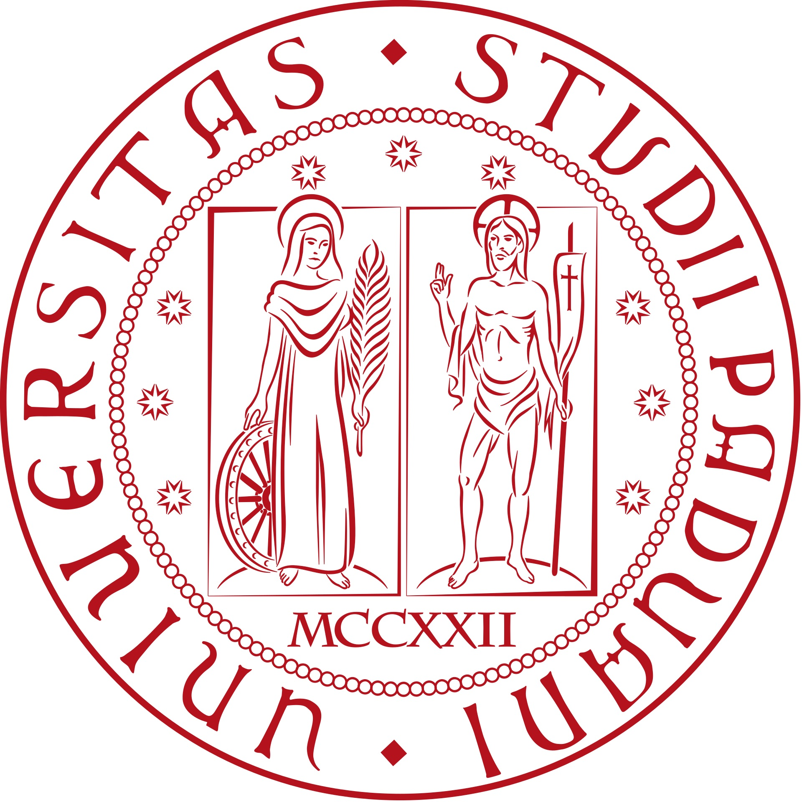

Curriculum Vitae
Working experience
-
Research Assistant in Theoretical Physics and Machine Learning

II. Institut für Theoretische Physik, Universität Hamburg, Germany
November 2023 - current -
Postdoctoral Researcher in Theoretical Physics
ITF, Utrecht University, the Netherlands
September 2020 - October 2023 -
Postdoctoral Researcher in Theoretical Physics
Jefferson Laboratory, Harvard University, Massachusetts, USA
February 2020 - August 2020
Education
-
Ph.D. in Theoretical Physics 
Dipartimento di Fisica e Astronomia ‘Galileo Galilei’, University of Padova, Italy
& INFN, Padova, Italy
Thesis: Exploring the Landscape of effective field theories
September 2016 - December 2019 -
Master’s Degree in Theoretical Physics

University of Pisa, Italy
Thesis: Renormalizability and finiteness of nonlocal Quantum Gravity
Grade: 110/110 cum laude
September 2014 - July 2016 -
Bachelor’s Degree in Physics
University of Pisa, Italy
Thesis: Path integral formulation of density matrices
Grade: 110/110 cum laude
September 2011 - September 2014
Teaching duties
-
Teaching assistance for the course of Quantum Field Theory I
Master of Theoretical Physics, Hamburg University
Academic year 2024/2025
Lecturer: Prof. Timo Weigand -
Teaching assistance for the course of Quantum Field Theory II
Master of Theoretical Physics, Hamburg University
Academic year 2023/2024
Lecturer: Prof. Timo Weigand -
Super-teaching assistance for the course of General Relativity
Master of Theoretical Physics, Utrecht University
Academic years 2021/2022 and 2022/2023
Lecturer: Prof. Tomislav Prokopec
Grants
- Fellowship from Angelo Della Riccia Foundation, Florence, 2020
- Fellowship from Aldo Gini Foundation, Padova, 2020
Certificates
- Python for Data Science and Machine Learning Bootcamp, Udemy, 2023
- Machine Learning Specialization, DeepLearning.AI, Stanford University, via Coursera, 2023
- IBM Data Science Professional Certificate, IBM, via Coursera, 2023
- Google Advanced Data Analytics Certificate, Google, via Coursera, 2023
- Google Data Analytics Certificate, Google, via Coursera, 2023